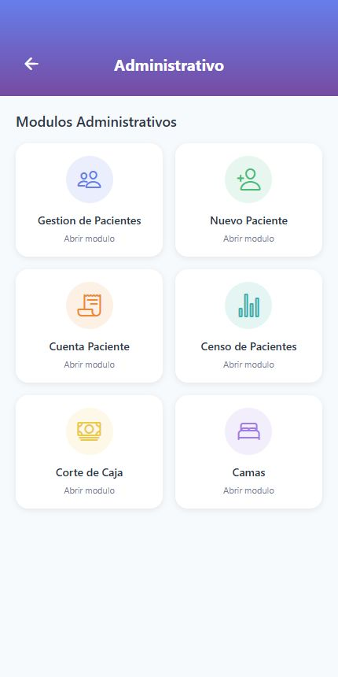

Sistema web
Acceso desde el navegador para las tareas administrativas y clínicas disponibles según el rol, incluida la consulta de lecturas y alertas de monitoreo.
OftalCore / Sistema web · App Android · IoT
Expedientes, atención y seguimiento en una plataforma con sistema web y app móvil Android, conectados al prototipo IoT ESP32 para el monitoreo de pacientes. Acceso para el personal autorizado de tu institución.
Producto en desarrollo y validación. Acceso institucional, sin registro público.

OftalCore reúne las tareas administrativas y clínicas, con acceso según la cuenta y los permisos asignados. Antes de utilizar expedientes reales, la institución debe formalizar su aviso y los acuerdos de tratamiento.
La plataforma OftalCore
OftalCore integra tres componentes. Este sitio presenta el producto y sus políticas; el acceso al sistema clínico y a la app se habilita por separado para cada institución.
Acceso desde el navegador para las tareas administrativas y clínicas disponibles según el rol, incluida la consulta de lecturas y alertas de monitoreo.
Consulta y registro desde el teléfono en los módulos autorizados, con seguimiento de pacientes y avisos de monitoreo cuando el servicio y los permisos están habilitados.
Envía lecturas y eventos de posible caída al backend del ambiente configurado. El sistema web y la app móvil consultan esa información cuando pertenecen al mismo ambiente.
01 / Funciones de la plataforma
Las funciones se organizan por el trabajo de cada área. La institución administra los usuarios, la información y las autorizaciones de acceso.
Registro y consulta de expedientes, cuentas, censo, corte de caja y gestión de camas desde los módulos disponibles.
Historia clínica, signos vitales, notas, diagnóstico y receta; valoración, medicamentos, balance y cuidados de enfermería.
Solicitudes de laboratorio y gabinete, consulta de resultados y archivos relacionados con la atención del paciente.
Usuarios, roles y catálogos para los responsables autorizados. Una sesión válida es necesaria para consultar información.
02 / Monitoreo complementario
El monitoreo está disponible en el sistema web y en la app móvil para consultar lecturas del ESP32 asociado y revisar alertas, incluida una posible caída. Las notificaciones requieren configuración, permiso del teléfono y conexión.
03 / Centro de confianza
Conoce el tratamiento de datos, las condiciones de uso y cómo solicitar ayuda o la eliminación de una cuenta.
Solicita información sobre el sistema web, la app Android y la configuración del prototipo IoT.